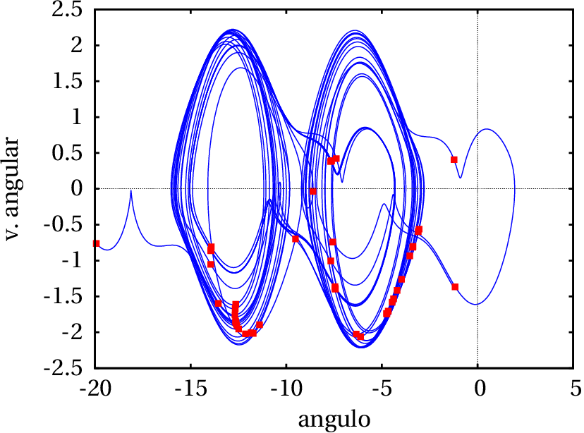

Os investigadores da NASA no Centro de Investigação de Langley usam fumo
colorido, que ascende desde uma fonte em terra, para visualizar um dos
vórtices produzidos na ponta da assa de um avião agrícola. A
turbulência associada ao vórtice é um exemplo de movimento caótico. A
imprevisibilidade desse movimento torna muito perigosa a aproximação de
outros aviões dentro da zona de turbulência. Estudos como este da NASA
são usados para determinar a distância mínima recomendável entre
aviões em voo, em função das condições; por exemplo, quando há mau
tempo esses vórtices são menores porque são dissipados pelo vento.
12.1. Órbitas fechadas atrativas
No capítulo anterior viu-se que quando existe um ciclo limite atrativo, as
curvas de evolução aproximam-se assimptoticamente desse ciclo. Também é
possível existirem órbitas
homoclínicas ou
heteroclínicas atrativas,
como no exemplo seguinte.
Exemplo 12.1
Represente o retrato de fase do sistema com equações de evolução:
e mostre que existe uma órbita heteroclínica atrativa.
Resolução. Começa-se por criar uma lista com as funções
e
, e outra lista com as variáveis de estado:
A seguir, determina-se a posição dos pontos de equilíbrio:
(%i3)solve (fg, vars);
(%o3)
,
,
existem 6 pontos de equilíbrio. Em vez de calcular a matriz jacobiana para
cada ponto, será analisado o retrato de fase, numa região que inclui os 6
pontos de equilíbrio:
(%i4)plotdf (fg, vars, [x,-0.5,2], [y,-1.5,2]);
Traçando algumas curvas de evolução com o programa
plotdf, descobre-se que os pontos (0, 0), (1, 0) e (0,
1) são pontos de sela, os pontos (0.25, 0.25) e (1.333, 1.333) são focos
repulsivos, e o ponto (1.75, -0.75) é um nó atrativo. Também vê-se que
as 3 retas
,
e
são separatrizes (ver
figura 12.1). O triângulo com vértices nos 3 pontos de sela é uma
órbita heteroclínica.
Figura 12.1: Retrato de fase do exemplo 12.1, com uma órbita
heteroclínica atrativa.
Todas as curvas de evolução que saem do foco no ponto
aproximam-se assimptóticamente da órbita
heteroclínica que, consequentemente é atrativa.
A diferença entre uma órbita heteroclínica atrativa, como a que existe
no exemplo anterior e um ciclo limite atrativo, está na forma como o
sistema se aproxima dessas curvas. Para estudar a forma como é feita
essa aproximação no caso da órbita heteroclínica, representa-se o
gráfico de evolução das variáveis de estado em função do tempo. Usando
o programa rk, com valores iniciais
e
, e para
desde 0 até 500,
(%i5)sol: rk (fg,vars,[0.26,0.26],[t,0,500,0.1])$
convém examinar o resultado da última iteração:
(%i6)last (sol);
(%o6)
neste caso, o programa rk conseguiu integrar unicamente até o tempo
final
. Em versões do Maxima compiladas com outras variantes de
Lisp, o mesmo programa pode parar num tempo
diferente. Isso é devido a
que, a acumulação de erros numéricos pode provocar que uma das duas
variáveis de estado atinja um valor por fora do triângulo formado pelos 3
pontos de sela; nesse caso, a variável cresce rapidamente para infinito.
Quando o valor obtido for muito elevado, provocará um erro no programa
rk que terminará as iterações nesse ponto.
Para representar os gráficos das duas variáveis de estado, em função
do tempo, desde
até
, com os resultados obtidos, usando
apenas um quinto dos pontos obtidos (que é suficiente neste caso),
usam-se os comandos:
A figura 12.2 mostra os gráficos obtidos, com a evolução das
variáveis de estado em função do tempo.
Figura 12.2: Evolução das variáveis de estado numa curva de evolução que
se aproxima da órbita heteroclínica do exemplo 12.1.
Inicialmente, cada variável oscila com período aproximadamente constante
e amplitude crescente. A amplitude aproxima-se de um valor máximo e o
período começa a aumentar gradualmente. O estado permanece cada vez mais
tempo perto de cada ponto de sela, e a seguir desloca-se rapidamente para o
ponto de sela seguinte. Esse comportamento é semelhante ao que foi
analisado na secção 10.3, para a órbita heteroclínica do
pêndulo. Nesse caso, com energia ligeiramente menor que a energia no ponto
de equilíbrio instável, a curva de evolução do pêndulo encontrava-se
muito próxima da órbita heteroclínica. No pêndulo, as curvas na
vizinhança interna da órbita heteroclínica são ciclos fechados, que se
repetem indefinidamente sem alteração, enquanto que no exemplo anterior
as curvas na vizinhança interna da órbita heteroclínica são espirais
que se aproximam cada vez mais da órbita heteroclínica.
12.2. Comportamento assimptótico
Em capítulos anteriores têm sido apresentados sistemas em que o estado
evolui para um ponto de equilíbrio estável. Um exemplo é um pêndulo; o
atrito com o ar faz diminuir a amplitude das oscilações e o pêndulo
aproxima-se do ponto de equilíbrio estável, na posição mais baixa do
pêndulo.
Outros sistemas evoluem aproximando-se de um ciclo no espaço de fase;
após algum tempo, cada variável de estado varia de forma cíclica
repetitiva. Os pontos do espaço de fase que fazem parte do ciclo limite
constituem o conjunto limite das curvas de evolução do sistema.
O conjunto limite positivo,
, de uma curva de
evolução
no espaço de fase, é o ponto, ou conjunto de pontos,
para onde a curva
se aproxima no limite
.
Define-se também o conjunto limite negativo,
, constituído pelo ponto ou conjunto de pontos para
onde a curva
aproxima-se no limite
Esses conjuntos limite poderão não existir, se a curva de evolução se
afastar continuamente sem limite. Se existirem, os conjuntos limite
poderão ser pontos de equilíbrio, ciclos ou órbitas homoclínicas ou
heteroclínicas.
A designação
e
para os conjuntos limite negativo e
positivo, é devida a que essas duas letras são a primeira e última letra
no alfabeto grego;
é a origem donde sai a curva de
evolução
, e
é o fim de
.
12.2.1. Teorema de Poincaré-Bendixson
Num sistema dinâmico onde existam unicamente duas variáveis de estado,
que possam ter qualquer valor real, o espaço de fase é um plano. Se as
duas variáveis de estado são
e
, o espaço de fase é o plano
e as equações de evolução são:
(12.1)
e a velocidade de fase em qualquer ponto do espaço de fase é o vetor:
(12.2)
Em cada ponto esse vetor determina a tangente à curva de evolução
que passa por esse ponto. Duas curvas de evolução diferentes
nunca se podem cruzar em nenhum ponto no domínio das funções
e
, porque no ponto onde se cruzavam existiam então duas velocidades de
fase diferentes, que não é possível.
O enunciado do teorema de
Poincaré-Bendixsoné:
Em qualquer sistema com apenas duas variáveis de estado (espaço de
fase plano), se existir o conjunto limite positivo, ou negativo, de uma
curva de evolução
, esse conjunto limite deverá ser um dos três
casos seguintes:
Um ponto de equilíbrio.
Um ciclo.
Uma órbita homoclínica ou heteroclínica.
Em particular, quando existir o conjunto limite positivo
,
chama-se também atrator. De acordo com o teorema de
Poncairé-Bendixson, num espaço de fase plano os únicos atratores podem
ser pontos de equilíbrio, ciclos, órbitas homoclínicas ou órbitas
heteroclínicas.
Se o conjunto limite positivo,
, de uma curva de evolução
for um único ponto, esse ponto deverá ser um ponto de equilíbrio, que
pode ser um nó ou foco estável, ou um ponto de sela. Se o conjunto limite
negativo,
, for um único ponto, poderá ser um nó ou foco
repulsivo, ou um ponto de sela.
Um ponto de sela pode ser simultâneamente conjunto limite positivo e
negativo de uma curva de evolução; nomeadamente, a curva de evolução
começa na vizinhança desse ponto de sela e fecha-se regressando à
região inicial. Esse tipo de curva de evolução constitui uma órbita
homoclínica.
12.2.2. Critério de Bendixson.
No espaço de fase
, a divergência da velocidade de
fase 12.2 é definida por:
(12.3)
Outro teorema importante, designado de critério de Bendixson é o
seguinte:
Num sistema dinâmico com apenas duas variáveis de estado, se numa
região simplesmente conexa R, do plano de fase, a divergência da
velocidade de fase é sempre positiva ou sempre negativa, então em R não
existe nenhum ciclo, nem órbita homoclínica nem órbita heteroclínica.
Uma região R simplesmente conexa é uma região sem nenhum buraco no seu
interior: a reta que une dois pontos quaisquer na região deverá estar
contida completamente em R.
O critério de Bendixson é útil para determinar em que regiões do plano
de fase podem existir ciclos, órbitas homoclínicas ou heteroclínicas.
Exemplo 12.2
Demonstre que um pêndulo, amortecido pela resistência do ar não pode ter
nenhum ciclo, nem órbitas homoclínicas ou heteroclínicas, mas um
pêndulo sem amortecimento sim.
Resolução. No capítulo 8 obteve-se a equação de movimento
(equação 8.8) que conduz às equações de evolução para o
ângulo,
e a velocidade angular
:
onde
e
são constantes positivas.
A divergência da velocidade de fase é:
Como tal, conclui-se que a divergência é sempre negativa (sistema
dissipativo) e, assim sendo, não existe nenhum ciclo nem órbitas
homoclínicas ou heteroclínicas. No caso conservativo, quando a
resistência do ar é nula,
, a divergência é nula e já não se
verifica a condição do critério de Bendixson. Como tal, no caso do
pêndulo sem amortecimento sim podem existir ciclos e, de facto, todas
as curvas de evolução são ciclos.
Se existir uma curva de evolução fechada C, formada por um ciclo, órbita
homoclínica ou órbita heteroclínica, as curvas de evolução no interior
e na vizinhnaça de C podem apresentar um dos 3 comportamentos seguintes:
Aproximam-se assimptóticamente de C.
Afastam-se assimptóticamente de C.
Formam uma família contínua de ciclos.
No primeiro caso, a curva C é o conjunto limite positivo,
, de todas as curvas
no seu interior. Deve existir
necessariamente um ponto de equilíbrio, no interior de C, que seja o
conjunto limite negativo
de todas essas curvas; ou seja,
esse ponto de equilíbrio deve ser nó ou foco instável.
No segundo caso, a curva C é conjunto limite negativo,
,
de todas as curvas
no seu interior. Deve existir necessariamente
um ponto de equilíbrio, no interior de C, que seja o conjunto limite
positivo
de todas essas curvas; como tal, esse ponto de
equilíbrio deve ser nó ou foco estável.
No terceiro caso, um dos ciclos menores pode ser ciclo limite atrativo ou
repulsivo, existindo assim um nó ou foco no seu interior, como nos dois
casos anteriores. Se nenhum dos ciclos na família de ciclos internos é um
ciclo limite, deve existir um centro no interior da família de ciclos.
Independentemente da situação no interior da curva C, no seu exterior
podem existir outros ciclos ou C pode ser conjunto limite atrativo ou
repulsivo. Isto é, uma órbita fechada pode ser atrativa no interior e no exterior, atrativa no interior mas repulsiva no exterior, etc.
12.3. Bifurcações
Considere-se um pêndulo rígido, como o que foi estudado na
secção 10.2, que se encontra sobre uma base horizontal que roda
com velocidade angular
constante (figura 12.3). No
problema 5 do capítulo 10
mostrou-se que, se a velocidade angular for maior que
, onde
é a distância desde o eixo até o centro de massa, a posição mais
baixa do pêndulo deixa de ser ponto de equilíbrio estável, passando a
ser ponto de equilíbrio instável, e aparecem dois novos pontos de
equilíbrio estável.
Figura 12.3: Pêndulo simples com a base em rotação no plano horizontal.
A equação de movimento (ver problema 5 do
capítulo 10) conduz às equações de evolução
para o ângulo,
e a velocidade angular,
(12.4)
O lado esquerdo da figura 12.4 mostra o retrato de fase
correspondente a essas equações, no caso em que a velocidade angular da
base,
, é menor que
. Existem dois pontos de
equilíbrio, em
e
; o primeiro ponto é um
centro, e o segundo ponto é um ponto de sela.
Figura 12.4: Bifurcação do ponto de equilíbrio de um pêndulo. Esquerda:
. Direita:
.
O lado direito da figura 12.4 mostra o retrato de fase
quando a velocidade angular da base,
, é maior que
. O ponto de equilíbrio em
torna-se instável,
passando a ser um ponto de sela com duas órbitas homoclínicas. Dentro
de cada órbita homoclínica há um novo centro. O sistema poderá oscilar
de forma periódica à volta de algum dos dois centros.
Diz-se que o sistema sofre uma bifurcação
em
. Imagine que a base do pêndulo estivesse
inicialmente em repouso, e o pêndulo na posição de equilíbrio estável,
com
e
. Se a base começar a rodar com aceleração
angular positiva, chegará um instante em que o estado do pêndulo se
torna instável, e qualquer pequena perturbação faz com que o pêndulo
suba abruptamente para uma das duas novas posições de equilíbrio
estável.
Como normalmente existe alguma incerteza experimental associada às
medições de
e
, isso implicará a impossibilidade
de prever para qual dos dois novos pontos de equilíbrio irá subir o
pêndulo, quando
atingir o valor que produz bifurcação.
Outro exemplo físico simples com bifurcação, já estudado por Euler no
século XVIII, é uma barra flexível, por exemplo uma régua plástica
apoiada numa mesa, e com uma força externa
que faz com que
permaneça na posição vertical. Se
não ultrapassar um valor crítico
, a régua permanecerá direta e em equilíbrio. Se a força
ultrapassar o valor crítico
, a régua encurva-se, até ficar numa
nova posição de equilíbrio em que o centro da régua está afastado uma
distância
da vertical. Acontece que o desvío da régua pode
ser para a direita ou para a esquerda da vertical. Ou seja, existem
dois pontos de equilíbrio com
positiva ou negativa.
Em função de
, o ponto de equilíbrio
, para
,
separa-se em dois pontos de equilíbrio,
e
,
para
. Trata-se de uma bifurcação: em
ainda
existe uma posição de equilíbrio, mas é bastante instável. Aparecem
duas novas posições de equilíbrio com
positivo e
negativo. Numa régua reta e simétrica em relação às deformações para
os dois lados, é difícil prever para qual dos dois lados irá
inclinar-se, quando
ultrapassa o valor de bifurcação.
12.4. Sistemas caóticos
Num sistema contínuo com duas variáveis de estado, o teorema de
Poincaré-Bendixson garante que as curvas de evolução que não têm
conjuntos limite positivo nem negativo aproximam-se do infinito nos
limites
e
.
Num sistema contínuo com 3 ou mais variáveis de estado, para além dos
3 tipos de conjuntos limites previstos pelo teorema de
Poincaré-Bendixson, surge outro tipo de conjunto limite chamado
atrator estranho. Um atrator estranho
é uma curva de evolução infinita, sem princípio nem fim, que ocupa uma
região do espaço de fase. Como o atrator estranho não se afasta até o
infinito, representa a evolução do sistema de forma semelhante a uma
oscilação cíclica; mas como o atrator não tem princípio nem fim, isso
significa que a oscilação é sempre diferente sem chegar nunca a
repetir-se (período infinito). Esse
tipo de comportamento chama-se caos.
Os atratores estranhos são fractais. As curvas
normais têm dimensão igual a 1, ou seja, se todas as distâncias nos
eixos aumentam num factor
, o comprimento
da curva aumenta no
mesmo factor
; as superfícies simples têm dimensão igual a 2,
porque a sua área aumenta em
. No entanto, as curvas fractais são
curvas com dimensão não inteira, entre 1 e 2.
Nas duas secções seguintes estudam-se dois exemplos de sistemas
caóticos.
12.4.1. Pêndulo forçado
A figura 12.5 mostra um pêndulo rígido no qual atua uma
forção externa
perpendicular à barra do pêndulo e aplicada a
uma distância
desde o eixo do pêndulo. A distância desde o eixo do
pêndulo até o seu centro de massa é
e
é o ângulo entre a
barra do pêndulo e a vertical.
Figura 12.5: Pêndulo com força externa.
Como foi concluído na secção 10.2, a energia cinética de
translação do centro de massa, mais a energia cinética de rotação
podem ser combinadas num único termo que depende do momento de inércia
em relação ao eixo fixo (equação 10.6):
(12.5)
onde
é o comprimento eficaz do pêndulo, igual ao raio de giração
ao quadrado, dividido por
. Usando como ponto de referência o eixo
do pêndulo, a energia potencial gravítica é igual a
(equação 10.7),
(12.6)
Considere-se o caso em que a força externa varia de forma sinusoidal,
com valor máximo
e frequência angular
:
(12.7)
e o pêndulo move-se dentro de um fluido viscoso que exerce força de
resistência ao movimento, proporcional à velocidade:
(12.8)
onde
é uma constante positiva e
é a velocidade do centro
de massa,
. Como tal, a
força de resistência é
(12.9)
A equação de Lagrange para o ângulo
(equação 8.4) é
(12.10)
A força generalizada
depende das duas forças não
conservativas, a força externa e a força de resistência do fluido:
(12.11)
A força externa atua na posição
, com componentes
(12.12)
E a força de resistência atua no centro de massa do pêndulo
(12.13)
o versor entre parêntesis é o versor radial
, e a sua
derivada em ordem a
é igual ao versor transversal
. Substituindo as derivadas e as expressões das
forças na equação 12.11, a força generalizada é igual a
(12.14)
E calculando as derivadas das expressões da energia, a equação de
Lagrange conduz à equação de movimento
(12.15)
onde o ângulo
é igual ao produto
e
,
e
são 3 constantes positivas:
(12.16)
é o parâmetro próprio do pêndulo, que determina o seu período
próprio de oscilação.
representa o efeito da força externa no
pêndulo e
o efeito dissipativo da resistência do fluido no
pêndulo.
Para escrever a equação de movimento na forma de um sistema autónomo
de primeira ordem, considera-se a velocidade angular
uma variável de estado, junto com as outras duas
variáveis de estado
e
. As três equações de evolução
são:
(12.17)
Para estudar o retrato de fase do sistema usam-se alguns valores
particulares dos 3 parâmetros e da frequência angular
. Por
exemplo,
,
,
e
, que corresponde a um
caso de um pêndulo amortecido sem força externa. Observe-se que
pode ser sempre definida igual a 1, se forem usadas unidades de tempo
diferentes do segundo. Por exemplo, se o comprimento eficaz do pêndulo
fosse
cm e o tempo fosse medido em ds (decisegundos), como
cm/ds2, então
.
Para analisar o comportamento do pêndulo à medida que a força externa
aumenta, convém definir a expressão da aceleração angular,
como função que depende da constante
, com os
valores de
,
e
já escolhidos:
(%i10)dw(C2) := -sin(q) - C2*cos(u) - w/2$
onde q e u são os ângulos
e
. Para obter
uma curva de evolução, escolhem-se valores iniciais para os ângulos e
a velocidade angular, por exemplo,
e
. O domínio de integração de
pode ser desde 0
até 500, com incrementos de 0.05 unidades. Convém criar listas com os
nomes das variáveis de estado, os seus valores iniciais e o domínio de
integração:
O primeiro argumento para o programa rk deve ser a lista dos lados
direitos das 3 equações de evolução, que neste caso são
, a
função que já foi definida como dw e
, que tem valor igual a
/5:
(%i14)p: rk ([w, dw(0), %pi/5], v, v0, d)$
A lista p contém vários pontos, cada um com 4 coordenadas (
,
,
,
). Assim sendo, o gráfico da curva de evolução
no plano
obtém-se com o seguinte comando:
A figura 12.6 mostra o resultado. Os valores usados para os
parâmetros conduzem a um oscilador com amortecimento fraco, que oscila
várias vezes antes de parar no ponto de equilíbrio estável.
Figura 12.6: Evolução do pêndulo com
.
Com valores de
diferentes de zero, o pêndulo apresenta
diferentes tipos de comportamentos. Por exemplo, com valores de
menores que 1, o sistema evolui para um ciclo limite. Para mostrar
apenas o ciclo limite, sem a parte inicial quando o sistema ainda não
entrou nesse ciclo, convém repetir o comando rk usando como
valores iniciais os valores finais da iteração anterior. Como o
resultado é guardado na lista p, o comando
last(p) extrai esse último resultado mas,
como esse último resultado inclui também o valor do tempo, para
eliminar o primeiro elemento (tempo) e ficar com uma lista com os
valores das 3 variáveis de estado, usa-se o comando
rest. No caso
, o procedimento
descrito é assim:
A segunda lista no comando plot2d em
(%i18) produz 50 pontos, representados pelo quadrado no
gráfico. Esses 50 pontos estão espaçados por intervalos de tempo de 10
unidades (200 iterações com incrementos de 0.05) e, como a frequência
angular da força externa é
/5, então esses 50 pontos correspondem
aos instantes sucessivos em que a força externa começa um novo ciclo:
,
, … O facto de que os 50 pontos (quadrados
no gráfico) aparecem todos uns sobre os outros indica que o pêndulo
oscila com o mesmo período da força externa.
Aumentando o valor de
para 0.995 e repetindo os mesmos comandos
(%i16), (%i17) e (%i18), mas com esse novo valor de
, obtém-se o gráfico da figura 12.8. O ciclo limite agora
é duplo, ou seja, dá duas voltas no espaço de fase antes de regressar ao
ponto inicial. As 50 oscilações da força externa aparecem agora em dois
pontos diferentes, indicando que o período de oscilação do pêndulo é
agora o dobro do período da força externa.
Figura 12.8: Ciclo duplo, com
.
Entre
e
ocorreu uma
duplicação do período.
A curva que define o ciclo limite estável em
menor que o valor
onde há duplicação do período, passa a ser instável quando
ultrapassa esse valor e aparece uma curva dupla nos dois lados dessa
curva inicial, que constitui o ciclo estável duplo. A bifurcação do
ciclo limite é um fenômeno semelhante à bifurcação dos pontos de
equilíbrio estudada na secção anterior.
Quando
continua a aumentar por cima de 0.995, ocorrem mais
duplicações do período. Por exemplo, com
obtém-se o ciclo
quadruplo na figura 12.9; o período da oscilação do pêndulo
é nesse caso quatro vezes o período da força externa. Os valores de
em que ocorrem duplicações do período estão cada vez mais
próximos dos anteriores. Assim sendo, há um valor de
em que o
período do pêndulo aproxima-se de infinito, ou seja, o pêndulo nunca
chega a repetir uma oscilação!
Figura 12.9: Ciclo quadruplo, com
.
O valor
, é superior ao valor onde o período de oscilação é
infinito. O resultado é o atrator estranho apresentado na
figura 12.10. Os cinquenta quadrados, correspondentes ao
início de cada ciclo da força externa, aparecem em pontos
diferentes. Se o comando (%i17) for repetido, esses cinquenta
pontos aparecem em novos sítios diferentes e a aparência do atrator é
diferente. Trata-se de facto de uma oscilação caótica, que nunca chega
a repetir-se. A parte do atrator estranho apresentada na
figura 12.10 corresponde a várias oscilações em torno dos
pontos de equilíbrio estável
,
e
.

Figura 12.10: Oscilação caótica, com
.
O pêndulo oscila algumas vezes em torno da posição de equilíbrio, com
diferentes amplitudes, e em alguma dessas oscilações a amplitude
aumenta tanto que faz com que o pêndulo descreva uma volta
completa. Após quantas oscilações isso acontece, ou em qual dos dois
sentidos será a próxima volta completa não segue nenhum padrão
simples. Claro está que o movimento no atrator estranho não é
aleatório e está perfeitamente determinado pelas equações de
evolução. No entanto, uma pequena alteração das condições iniciais faz
com que o movimento comece num ponto diferente do atrator estranho,
produzindo um padrão de oscilações completamente diferente. O próprio
erro numérico inerente aos cálculos feitos pelo programa rk
implica a impossibilidade de saber se o resultado dado pelo programa
estará na parte do atrator estranho onde realmente estará o pêndulo ou
se estará a obter-se outra região diferente desse atrator estranho.
Nos sistemas caóticos, dentro da região caótica costumam aparecer
"janelas" de ordem, em que o sistema tem soluções com período
finito. Por exemplo, com
, obtém-se o ciclo limite triplo
apresentado na figura 12.11.
Figura 12.11: Ciclo triplo, quando
.
O período do ciclo com
é três vezes o período da força
externa. Os ciclos triplos são uma das propriedades associadas à
existência de atratores estranhos. Quando
é um pouco maior do
que 1.1, entra-se novamente numa região de movimento caótico.
Neste exemplo do pêndulo forçado, o movimento caótico surge devido ao
fenómeno de duplicação do período. Outro exemplo de sistema que se
torna caótico devido à duplicação do período é o sistema de
Rössler (problema 10 do
capítulo 11 e problema 3 no fim deste
capítulo). Existe outro mecanismo diferente que também conduz à
aparição de atratores estranhos, ilustrado pelo exemplo da próxima
secção.
12.4.2. Equações de Lorenz
No sistema estudado na secção anterior, o atrator estranho permanece
numa região finita do plano
, mas a terceira variável de
fase,
, está sempre a aumentar; ou seja, o atrator estranho
estende-se em todo o eixo
, desde menos infinito até
infinito. Outro exemplo de sistema caótico no qual todas as variáveis
permanecem numa região finita do espaço de fase é o sistema de Lorenz.
Em 1963, o meteorologista E. N. Lorenz
introduziu um modelo meteorológico para as correntes de convecção do
ar em planos verticais, produzidas por aquecimento na aresta inferior
dos planos. As três equações diferencias do sistema são as seguintes
(12.18)
onde
representa a amplitude das correntes de conveção,
é a
diferença de temperaturas entre as correntes ascendente e descendente
e
representa o desvio da temperatura normal no plano. Os três
parâmetros
,
e
são positivos e dependem das
propriedades físicas do fluxo de ar.
Algumas propriedades deste sistema são as seguintes:
Existe simetria em relação à transformação (
,
,
)
(
,
,
)
O eixo
é invariante; ou seja, se o estado em algum instante
estiver no eixo
, continuará a evoluir nesse eixo.
Se o parâmetro
(número de Rayleigh)
estiver no intervalo
, o único ponto de equilíbrio é a
origem, que é ponto de equilíbrio estável.
Existe uma bifurcação do ponto de equilíbrio na origem, quando
. Para valores
superiores a 1, a origem torna-se ponto de
equilíbrio instável, e aparecem outros dois pontos de equilíbrio, com o
mesmo valor de
, mas com valores simétricos de
e
.
Se
estiver entre 1 e o valor crítico:
(12.19)
os dois novos pontos de equilíbrio são estáveis e a origem é instável.
Para valores de
superiores ao valor crítico, os 3 pontos de
equilíbrio são instáveis, e constituem um atrator estranho.
Alguns valores típicos de
(número de Prandtl) e de
são 10 e
8/3. Com esses parâmetros, o valor crítico de
é aproximadamente
24.737. O valor
, conduz a um sistema caótico. Nesse caso as
equações de Lorenz são,
(%i19)eqs: [10*(y-x), 28*x-y-x*z, x*y-8*z/3]$
Podem guardar-se os nomes das variáveis de estado e uns valores iniciais
para elas em duas listas:
(%i20)v: [x,y,z]$ (%i21)v0: [5,5,5]$
Para obter a curva de evolução com esses valores iniciais
,
desde
até
, convém primeiro conferir que a solução
numérica tenha um erro numérico aceitável; isso consegue-se diminuindo
sucessivamente o valor de
, até os resultados convergirem:
A lista p pode ser usada para obter vários gráficos diferentes.
Por exemplo, para representar o gráfico da projeção da curva no plano
, usa-se o seguinte comando:
A figura 12.12 mostra o resultado. O sistema oscila em torno
dos dois pontos de equilíbrio estável, com
e
.
Após algumas oscilações em torno de um desses pontos, com amplitudes
diferentes, o sistema passa a oscilar à volta do outro ponto de
equilíbrio. A variação da amplitude das oscilações e o número de
oscilações antes de passar para o outro ponto de equilíbrio, não segue
nenhum padrão repetitivo.
Figura 12.12: Atrator estranho de Lorenz, projetado no plano
.
O número de oscilações em cada ponto de equilíbrio é identificado mais
facilmente no gráfico de
em função de
(figura 12.13).
O sistema começa por aproximar-se do ponto de equilíbrio em
positivo,
mas salta logo para o lado negativo de
, realizando sete oscilações
completas em torno do ponto de equilíbrio em
negativo, passando logo
para
positivo, onde faz duas oscilações completas, etc.
Figura 12.13: Oscilações do sistema de Lorenz com dois valores iniciais
diferentes,
e
. Parâmetros:
,
,
,
,
.
O gráfico 12.13 mostra também a solução obtida começando com
um valor inicial ligeiramente diferente,
, em vez de 5. A
figura foi produzida com o seguinte comando:
As duas soluções parecem idênticas até
, mas a partir desse
tempo começam a diferir; em
aproximadamente 12.5, a primeira
solução passa de
positivo para negativo, enquanto a outra solução
continua oscilando no lado positivo de
. A partir desse instante as
duas soluções são drasticamente diferentes. Essa sensibilidade em
relação aos valores iniciais é outra das caraterísticas dos sistemas
caóticos.
O mecanismo que dá origem a que o sistema de Lorenz se torne caótico,
quando
aumenta por cima de um valor crítico, chama-se
intermitência. O ponto de
equilíbrio estável em
bifurca-se, passando a ser instável e com
a aparição de dois pontos de equilíbrio estável com
positivo e
negativo; as oscilações, que no caso não caótico eram em torno do
único ponto de equilíbrio estável passam a alternar de forma
intermitente entre os dois pontos de equilíbrio estável no caso
caótico.
Perguntas
(Para conferir a sua resposta, clique nela.)
No sistema representado na figura, qual é o conjunto limite negativo
da curva de evolução que passa pelo ponto (0, 0.5)?
(0, -0.5)
(1, 0)
(0, 0)
(-1, 0)
não existe
Se a curva de evolução de um sistema dinâmico, no espaço de fase,
passa duas vezes pelo mesmo ponto P, o qué é que podemos concluir?
P é um ponto de equilíbrio.
o sistema é caótico.
o sistema tem mais do que duas variáveis de estado.
o sistema tem duas variáveis de estado.
a curva é um ciclo.
Qual das seguintes não é uma propriedade dos sistemas caóticos?
sistema não linear.
3 ou mais variáveis de estado.
existência de atratores estranhos.
soluções não periódicas.
inexistência de pontos de sela.
Para resolver numericamente um sistema caótico, é necessário usar
maior precisão do que para um sistema não caótico. Isso é devido a que
um sistema caótico:
não tem curvas de evolução periódicas.
tem mais do que duas variáveis de estado.
é muito sensível às condições iniciais.
produz fractais.
tem soluções que aumentam muito rapidamente.
Em que condições poderá um sistema de duas espécies tornar-se caótico?
só se for sistema predador presa.
só se existir competição entre as espécies.
só se existir cooperação entre espécies.
só se o sistema não for autónomo.
nunca.
Problemas
Em cada caso, encontre os conjuntos limite positivo e negativo das
curvas de evolução que passam pelos pontos (0, 0) e (1, 1), usando
técnicas analíticas ou gráficas:
(a)
,
.
(b)
,
Demonstre que o sistema
não tem ciclos, nem órbitas homoclínicas ou heteroclínicas.
O sistema de Rössler é definido pelas seguintes equações de evolução,
com 3 parâmetros positivos
,
e
:
Investigue a solução do sistema com
e
fixos e com os
seguintes valores de
: (a)
(b)
(c)
(d)
.
Em cada caso use o programa rk para obter a solução, com
incrementos de tempo
e de forma a que sejam feitas
6000 iterações. Pode usar como valores iniciais
. Trace os
gráficos da curva projetada no plano
e de
em função de
. Volte a executar 6000 iterações do programa rk, mas agora
usando como valores iniciais os valores finais obtidos na primeira
execução do programa (o comando rest(last(lista)) extrai o último vetor na lista
anterior, excluindo o tempo). Trace novamente os mesmos gráficos e
repita o procedimento até conseguir concluir qual é o conjunto limite
positivo da curva considerada e se for um ciclo, determine o seu
período. Em cada alínea diga qual é o conjunto limite, o seu
período (se for um ciclo) e mostre um gráfico que justifique a sua
conclusão.
Use o mesmo procedimento do problema anterior e responda às mesmas
perguntas, mas para o sistema de Chen e Ueta:
com os seguintes valores do parâmetro: (a)
(b)
(c)
.
Use incrementos de tempo de 0.001, 6000 iterações e valores iniciais
,
. Analise os gráficos da curva no plano
e de
em função de
.
Encontre os pontos de equilíbrio do sistema de Lorenz com os seguintes
parâmetros:
e demonstre que o valor de
é superior ao valorvcrítico para que o
sistema seja caótico.
Respostas
Perguntas:1. B. 2. E. 3. E.
4. C. 5. D.
Problemas
(a) Para o ponto (0, 0),
é o ponto (0, 1) e
é o ponto (0, -1). Para (1, 1)
é o ponto (0, 1) e
não existe.
(b) Para o ponto (0, 0), que é ponto de equilíbrio,
e
são o próprio ponto. Para (1, 1)
e
são
iguais ao círculo que com centro na origem e raio igual a
.
A divergência é
, que é sempre positiva. O
critério de Bendixson implica que não existe nenhum ciclo ne órbitas
homo/heteroclínicas.
Os dois gráficos seguintes, mostram que o conjunto limite positivo na
alínea (a) é um ciclo simples e na alínea (b) é um
ciclo duplo:
O período calcula-se com precisão no gráfico
vs
, medindo o
tempo entre várias oscilações e dividindo pelo número de
oscilações. Na alínea (a) o período é 6.2 e na alínea
(b) 12.4. O gráfico seguinte mostra que na alínea
(c) obtém-se um ciclo quadruplo, com período 24.8 e na alínea
(d) o resultado é um atrator estranho, porque cada vez que se
calculam mais iterações, o gráfico é sempre diferente.
Na alínea (a) o conjunto limite é um atrator estranho,
porque cada vez que se calculam mais iterações o gráfico é sempre
diferente; o gráfico seguinte mostra dois desses resultados, no plano
.
Na alínea (b) o conjunto limite é um foco atrativo em (4.24,
4.24, 6) e na alínea (c) o conjunto limite é um nó atrativo
na origem, como mostram os dois gráficos seguintes de
em função
de
:
As coordenadas dos pontos de equilíbrio para onde a curva se aproxima
obtêm-se a partir do último elemento na lista produzida por rk.
Os 3 pontos de equilíbrio são: (0, 0, 0), (8.485, 8.485, 27) e
(-8.485, -8.485, 27). O valor crítico de
é 24.737, menor que 28.


 O período calcula-se com precisão no gráfico
vs
, medindo o
tempo entre várias oscilações e dividindo pelo número de
oscilações. Na alínea (a) o período é 6.2 e na alínea
(b) 12.4. O gráfico seguinte mostra que na alínea
(c) obtém-se um ciclo quadruplo, com período 24.8 e na alínea
(d) o resultado é um atrator estranho, porque cada vez que se
calculam mais iterações, o gráfico é sempre diferente.
O período calcula-se com precisão no gráfico
vs
, medindo o
tempo entre várias oscilações e dividindo pelo número de
oscilações. Na alínea (a) o período é 6.2 e na alínea
(b) 12.4. O gráfico seguinte mostra que na alínea
(c) obtém-se um ciclo quadruplo, com período 24.8 e na alínea
(d) o resultado é um atrator estranho, porque cada vez que se
calculam mais iterações, o gráfico é sempre diferente.

 Na alínea (b) o conjunto limite é um foco atrativo em (4.24,
4.24, 6) e na alínea (c) o conjunto limite é um nó atrativo
na origem, como mostram os dois gráficos seguintes de
em função
de
:
Na alínea (b) o conjunto limite é um foco atrativo em (4.24,
4.24, 6) e na alínea (c) o conjunto limite é um nó atrativo
na origem, como mostram os dois gráficos seguintes de
em função
de
:
 As coordenadas dos pontos de equilíbrio para onde a curva se aproxima
obtêm-se a partir do último elemento na lista produzida por
As coordenadas dos pontos de equilíbrio para onde a curva se aproxima
obtêm-se a partir do último elemento na lista produzida por
(clique para continuar)